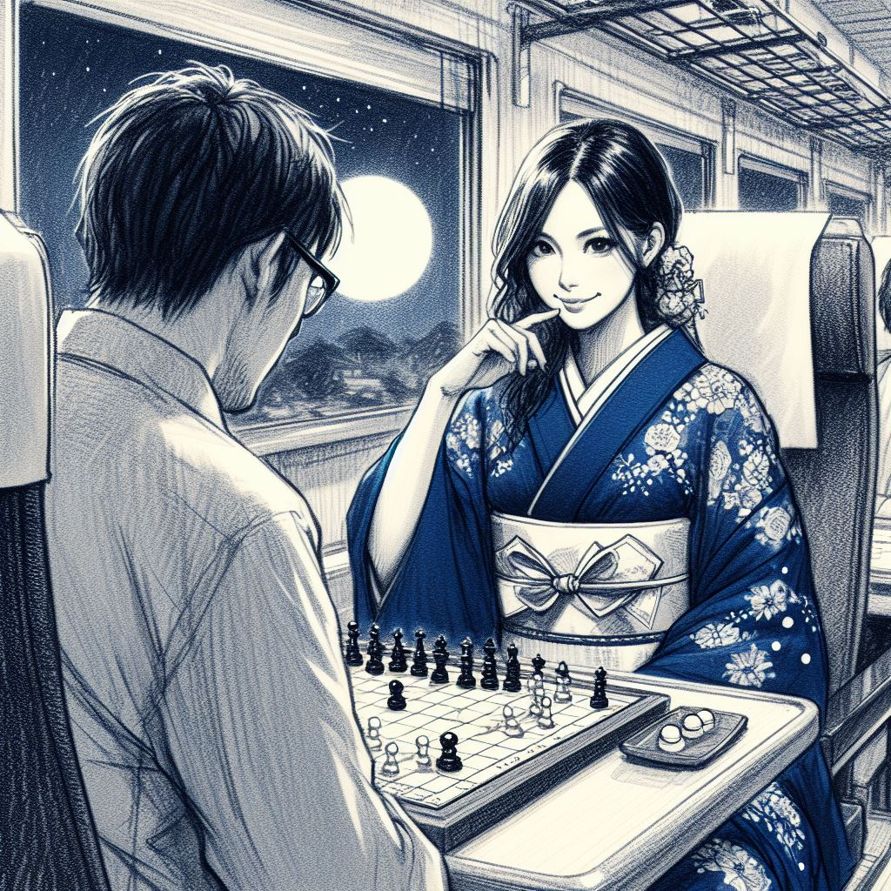
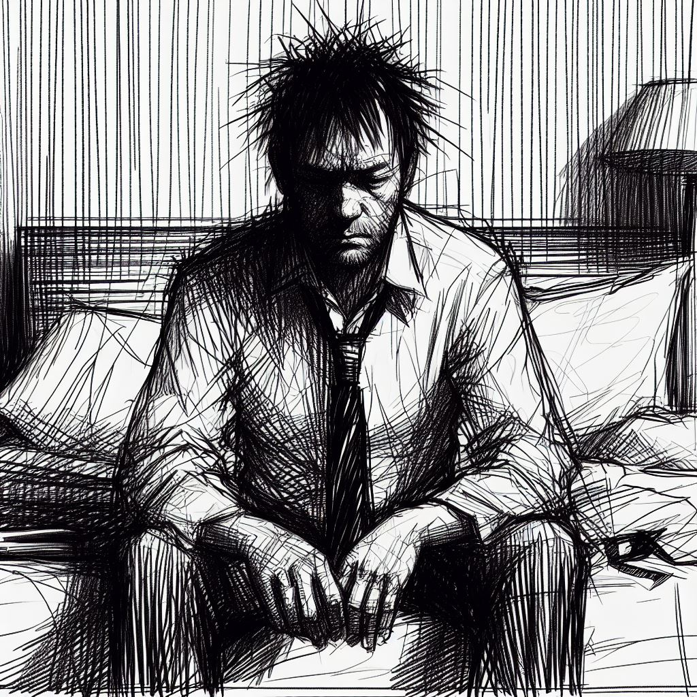

Dans les cercles de joueurs de ōgi, jeu traditionnel japonais similaire au shōgi, circule une histoire intrigante.
Cette histoire, bien connue dans la région du Kansai, parle de Komayō, une figure aussi énigmatique que fascinante, évoquée lors des nuits de pleine lune.
Selon cette histoire, Komayō, d'une beauté captivante, attire les joueurs égarés en leur proposant une partie d'ōgi.
Sa présence et son charme mystérieux semblent envelopper les parties d'une aura particulière, emmenant les joueurs dans un tourbillon de stratégies et de manœuvres plus profondes que le simple jeu.
Il se dit que ceux qui jouent contre elle expérimentent un sentiment de lassitude progressif, une fatigue qui s'infiltre dans leur esprit et leur corps.
Ce phénomène, décrit par certains comme surnaturel, les plongerait dans un sommeil profond et irréversible, un état presque mythique.
La part la plus mystérieuse de cette histoire concerne la nature véritable de Komayō.
On raconte qu'en ces moments de vulnérabilité extrême, elle dévoilerait sa véritable forme et siphonnerait l'énergie vitale des joueurs, ne laissant derrière elle qu'un sentiment de vide et de perte.
Ces joueurs, épuisés par cette expérience, se transformeraient en yūrei, des esprits errants condamnés à une recherche incessante.
Hantés par le souvenir de leur rencontre avec Komayō et par le désir inassouvi de terminer leur partie, ces esprits seraient piégés dans une errance sans fin.
Départ pour Tōkyō
La nuit enveloppait la région du Kansai, illuminée par la pleine lune qui projetait son halo argenté sur le paysage en mouvement.
Le Shinkansen, symbole de technologie et d'efficacité, glissait silencieusement à travers la nuit, emportant ses passagers vers Tōkyō.
À bord, Takeshi, le champion du monde de ōgi, observait pensivement le paysage nocturne.
Confortablement installé, il se laissait bercer par le rythme apaisant du train.
L'habitacle, baigné dans une tranquillité presque méditative, était rythmé par le doux ronronnement du train et le claquement régulier des rails, composant une mélodie hypnotique.
Les reflets de la lune sur les rizières et les forêts ajoutaient une touche de sérénité et de mystère au paysage.
Pour Takeshi, ce voyage nocturne était un moment de calme avant la tempête.
C'était un retour vers la familiarité de Tōkyō, où l'attendaient de nouveaux défis : une compétition imminente et un adversaire redoutable à affronter.
L'irruption de la femme en kimono bleu
L'habitacle tranquille et confortable du wagon fut soudainement troublé par un bruit.
La porte s'ouvrit dans un sifflement aigu, attirant l'attention de Takeshi malgré lui.
Une jeune femme fit son entrée, vêtue d'un kimono bleu nuit éclatant contrastant avec la sobriété ambiante.
Sa beauté naturelle et sa grâce étaient indéniables, captant les regards.
Takeshi, un instant distrait, se rappela rapidement à l'ordre, revenant à ses réflexions stratégiques.
Lorsque la jeune femme s'assit à côté de lui, il remarqua brièvement l'éclat de reconnaissance dans ses yeux.
Probablement une admiratrice, pensa-t-il, sans laisser transparaître son amusement.
Familiarisé avec l'attention, il ne se laissait pas détourner de ses priorités.
Pour Takeshi, le véritable enjeu était le match de demain.
Son esprit restait envahi de stratégies et de mouvements tactiques du ōgi.
En tant que champion, sa détermination et sa concentration restaient inébranlables.
Le véritable défi, pour lui, ne faisait que commencer.
La sollicitation
Alors que le Shinkansen glissait à travers la nuit, la jeune femme à côté de Takeshi sortit délicatement un plateau de ōgi de son sac.
Les pièces de bois, finement ouvragées et ornées de motifs élaborés, captaient la lumière lunaire, créant un jeu de reflets apaisants.
Son regard se posa sur Takeshi, pétillant d'admiration, tandis qu'elle lui proposait une partie avec une respectueuse timidité.
Takeshi, un moment distrait par son entrain, masqua rapidement ses pensées conflictuelles.
Il était là pour se préparer au match crucial du lendemain, non pour se laisser entraîner dans une partie impromptue.
Il déclina poliment, évoquant la nécessité de rester concentré pour le tournoi.
Cependant, l'assurance de la jeune femme ne faiblit pas.
Son regard sincère et sa présentation en tant qu'étudiante passionnée de ōgi éveillèrent chez Takeshi un écho de sa propre passion.
Elle exprima son admiration pour lui et son désir ardent d'apprendre.
Ses mots révélaient un profond respect et une aspiration sincère à exceller.
Takeshi, touché, sentit son cœur de champion balancer.
Le dilemme était réel : la concentration nécessaire pour le tournoi du lendemain contre l'occasion d'inspirer une nouvelle génération.
Après un moment de réflexion intense, un sourire discret se dessina sur ses lèvres.
Il acquiesça doucement, son regard se posant sur le plateau de ōgi.
La valse de l'ōgi
La partie commença, un ballet silencieux de mouvements calculés et de stratégies non dites.
Takeshi, bien qu'épuisé par les événements de la journée et conscient de l'importance du tournoi à venir, ne prit pas son adversaire à la légère.
À chaque tour, il pesait soigneusement ses options, évaluant plusieurs coups à l'avance.
Le regard de la jeune femme ne quittait jamais le plateau de jeu, tandis que Takeshi se laissait emporter par les courants complexes de la partie.
Après dix minutes de jeu intense, la qualité de jeu de la jeune femme commença à frapper Takeshi.
Il était clair qu'elle n'était pas une amatrice ordinaire.
Son jeu était rapide, ses mouvements fluides, et bien que ses choix étaient souvent surprenants, ils se révélaient efficaces.
Son ouverture, bien que non conventionnelle, semblait naturelle et instinctive.
Elle réussissait à contrecarrer ses stratégies et à lui donner du fil à retordre.
Takeshi, habitué à dominer ses adversaires, se trouva de plus en plus sous pression.
Cependant, ce qui surprit Takeshi le plus, c'était l'intuition de la jeune femme.
Son instinct lui permettait d'évaluer rapidement les meilleures lignes de jeu, parfois même avant que Takeshi ne les repère lui-même.
Elle jouait comme si elle avait déjà prévu les mouvements qu'il ferait, anticipant ses stratégies avec une facilité déconcertante.
Elle semblait même s'amuser.
Takeshi ressentit une pointe d'admiration et de respect pour son adversaire.
Mais cette admiration était teintée d'une légère irritation.
Son esprit s'épuisait plus vite qu'il ne l'aurait aimé et il sentait que cette partie imprévue commençait à prendre un tribut sur ses réserves d'énergie.
Il n'aurait pas pensé qu'un match improvisé dans un train puisse lui donner autant de fil à retordre.
Pourtant, malgré l'urgence croissante d'écourter le jeu, Takeshi restait accroché, son esprit de compétition le poussant à continuer.
Le défi lancé par cette mystérieuse inconnue était plus séduisant que ce qu'il imaginait.
La contre-attaque du champion
Dans l'enceinte silencieuse du wagon, une bataille silencieuse et sans merci faisait rage.
Takeshi, le champion du monde de ōgi, était en train de livrer une lutte acharnée contre une adversaire inattendue, la jeune femme au kimono bleu nuit.

Une légère douleur lancinante se faisait sentir dans la tempe de Takeshi.
Il réalisa qu'il s'agissait probablement d'un mal de tête, conséquence de l'éclairage artificiel du wagon ou du léger ballottement du train.
Il balaya néanmoins rapidement cette pensée de son esprit.
Il n'avait pas le luxe de se laisser distraire par de tels détails.
Les yeux de Takeshi étaient fixés sur le plateau de jeu.
Son esprit se concentrait entièrement sur les combinaisons, les séquences de mouvements possibles, cherchant le moindre signe de faiblesse dans la défense de son adversaire.
La lutte était intense, une vraie tempête sous un crâne.
Takeshi se lança alors dans une série de manœuvres audacieuses.
Sacrifiant plusieurs de ses pièces, il ouvrait de nouvelles lignes d'attaque, cherchant à faire basculer l'équilibre du jeu en sa faveur.
Chaque coup qu'il jouait était une déclaration d'intention, une affirmation de sa volonté de vaincre.
Sa stratégie semblait porter ses fruits.
Les défenses de son adversaire commençaient à s'effriter sous la pression de ses attaques.
Il ne s'arrêta pas là.
Au contraire, il redoubla d'efforts, cherchant à accentuer l'avantage qu'il avait acquis.
Pourtant, malgré cette intensité, Takeshi ressentait une fatigue croissante.
Chaque mouvement de ses mains, chaque coup joué semblait puiser dans ses réserves d'énergie.
La bataille qu'il menait sur le plateau de jeu était en train de devenir une lutte contre lui-même, contre sa propre endurance.
Mais Takeshi n'était pas champion pour rien.
Il tenait bon.
Il ne laissait rien transparaître, continuait à jouer avec la même intensité et la même détermination.
Il était décidé à mener cette partie à son terme, peu importe le prix à payer.
Le défi posé par cette mystérieuse inconnue se révélait décidément plus captivant qu'il ne l'avait imaginé.
Une résistance inflexible
Assis à l'autre extrémité de la table, la mystérieuse femme au kimono bleu nuit semblait être dans un monde à part.
Malgré l'effondrement graduel de sa position sur le plateau de jeu, elle restait incroyablement calme et concentrée, comme si rien ne pouvait la déstabiliser.
Chaque attaque dévastatrice lancée par Takeshi était reçue avec une régularité rythmée, ses doigts se déplaçant sur le plateau avec une précision qui frôlait l'irréalité.
Son rythme de jeu n'avait pas fléchi depuis le début de la partie.
Il y avait une tranquillité dans sa tempête, chaque coup du champion étant paré avec une étonnante sérénité.
Tout en poursuivant l'assaut, Takeshi sentait une pointe d'agacement le gagner.
C'était un sentiment qu'il connaissait rarement, une sensation généralement réservée aux adversaires les plus résilients.
Sa poitrine se serrait à chaque battement de son cœur accéléré, ses tempes palpitaient au rythme de sa respiration laborieuse.
Sa transpiration, de plus en plus abondante, trahissait ce combat intérieur.
Cette adversaire, une parfaite inconnue jusqu'à quelques heures auparavant, lui donnait du fil à retordre.
Ce qui était censé être un simple jeu de détente dans le train s'était transformé en un véritable défi qui testait à la fois sa patience et sa maîtrise de soi.
Tandis que la lune pleine illuminait le wagon à travers les fenêtres, la tension devenait de plus en plus palpable.
Chaque coup joué intensifiait le suspense, chaque mouvement des pièces résonnait dans le wagon presque silencieux.
Pour Takeshi, cette partie imprévue était devenue un duel épuisant qui s'éternisait, bien au-delà de ce à quoi il s'était préparé.
Le mystère s'épaissit
La situation devenait de plus en plus étrange pour Takeshi.
Le va-et-vient incessant des pièces de ōgi, la présence croissante de curieux se rapprochant de leur table, le silence dense qui pesait sur le wagon...
tout cela formait une ambiance singulière.
Takeshi était habitué à être le centre de l'attention lors des tournois, mais ici, dans l'intimité de ce wagon de train, la proximité des observateurs semblait plus étouffante.
Des téléphones portables étaient levés discrètement, leurs écrans brillant doucement dans la pénombre du wagon.
Chaque mouvement, chaque échange était capturé et immortalisé.
L'attention que la partie suscitait, cependant, était moins dérangeante pour Takeshi que l'énigme qui se tenait en face de lui.
Qui était cette femme qui, malgré l'impitoyable pression qu'il exerçait, parvenait à garder un sang-froid si parfait ?
Comment une simple fan, une prétendue amatrice, pouvait-elle faire preuve d'une telle maîtrise du jeu et lui offrir une opposition si résiliente ?
Les traits de son visage, éclairés par la lumière argentée de la lune, étaient d'une sérénité désarmante.
Ses yeux noirs ne montraient aucun signe de panique ni de crainte.
Ils se concentraient uniquement sur le plateau de jeu, comme si rien d'autre n'existait.
Takeshi commençait à sentir le doute l'envahir.
Était-ce une simple étudiante passionnée comme elle le prétendait ?
Ou était-ce une professionnelle déguisée qui testait ses limites ?
La question le hantait tandis qu'il se préparait à jouer son prochain coup, le mystère autour de son adversaire ajoutant une couche supplémentaire de complexité à cette partie inattendue et éprouvante.
Le déclin imminent
La tension était palpable.
Chaque respiration de Takeshi semblait se synchroniser avec le rythme silencieux de la partie.
Son esprit, bien qu'épuisé, travaillait à plein régime, analysant et calculant des centaines de scénarios possibles.
Ses doigts tremblaient légèrement, un signe de fatigue certes, mais aussi de l'excitation qui montait en lui.
Il était sur le point d'y arriver.
Il avait enfin réussi à prendre le dessus, à creuser un écart de plus en plus conséquent entre lui et son adversaire.
Il pouvait presque voir la fin de la partie, un échec et mat inévitable qui se dessinait sur l'échiquier.
Encore une quinzaine de coups environ avant le mate, pensa Takeshi, sentant un frisson d'anticipation parcourir son échine.
Cependant, cette anticipation était teintée d'un profond malaise.
Ses yeux rouges et fatigués luttaient pour rester ouverts, clignant de manière intermittente pour essayer de rester concentrés sur le jeu.
Sa nuque se crispait sous la pression qu'il imposait à son corps pour rester éveillé.
La fatigue s'était infiltrée dans chaque fibre de son être, mais il ne pouvait pas se permettre de céder maintenant.
Il voyait sa victoire se profiler à l'horizon, aussi claire et inévitable que le lever du soleil.
Mais le chemin jusqu'à elle était pavé de difficultés, chacune de ses prochaines actions requérant une concentration et un effort considérables.
Malgré la fatigue qui le tirait vers le bas, Takeshi se concentrait sur le plateau.
Chaque coup était délibéré, chaque mouvement méticuleusement planifié.
Il pouvait sentir les yeux de son adversaire sur lui, mais il ne la regardait pas.
Son monde, pour l'instant, était limité au plateau de ōgi devant lui, à la victoire qu'il devait atteindre.
Il ne pouvait pas se permettre de faiblir maintenant.
Pas quand il était si près du but.
L'épreuve de l'endurance
La fatigue était devenue insoutenable.
Takeshi sentait chaque seconde s'écouler comme une éternité, chaque mouvement lui demandait un effort herculéen.
Il était conscient que le poids de ses paupières s'alourdissait et que son corps réclamait un repos urgent.
Mais la bataille sur le plateau de ōgi n'était pas encore terminée.
L'adversaire de Takeshi était toujours là, résistant farouchement à l'inévitable.
Pourtant, la victoire de Takeshi était quasi assurée, il n'y avait aucune issue plausible pour la jeune femme.
N'importe quel joueur expérimenté aurait reconnu cela et aurait abandonné avec honneur.
Mais elle, elle continuait à jouer, comme si chaque coup supplémentaire était une petite victoire en soi.
Ce qui agaçait encore plus Takeshi, c'était son attitude.
Elle semblait prendre un malin plaisir à le voir souffrir, à le pousser dans ses retranchements.
Ses yeux pétillaient de défi, elle savourait chaque moment de cette partie qui semblait s'éterniser.
Elle avait ce sourire confiant, presque moqueur, qui faisait bouillir Takeshi de l'intérieur.
Il se sentait trahi.
Il avait accepté cette partie avec une femme qu'il pensait être une simple fan, une amatrice passionnée par le ōgi.
Il avait envisagé cela comme un moment de détente, une partie pour s'amuser et partager sa passion.
Au lieu de cela, il se retrouvait pris dans un duel d'endurance, une véritable épreuve de volonté.
Takeshi serra les poings.
Il sentait la colère monter en lui, mais il ne la laisserait pas prendre le dessus.
Il était Takeshi, le champion de ōgi, et il ne se laisserait pas battre par la fatigue ou par la malveillance d'une adversaire obstinée.
Il posa son regard sur le plateau de ōgi, fixant les pièces comme s'il pouvait les forcer à se mouvoir par la seule force de sa volonté.
Il n'abandonnerait pas, il irait jusqu'au bout, jusqu'à la victoire.
Quel que soit le prix à payer.
Le combat contre soi-même
Le souffle de Takeshi se faisait saccadé, ses tempes battaient au rythme effréné de son cœur.
Chaque coup sur le plateau de ōgi demandait une concentration maximale, chaque respiration était une lutte pour rester conscient.
Il était épuisé, mais il se refusait à céder à la fatigue.
Sa fierté de champion ne lui permettait pas d'abandonner.
Le jeu devenait de plus en plus flou, les pièces semblaient danser devant ses yeux.
Takeshi tentait de faire abstraction de tout cela, se concentrant sur les mouvements de son adversaire, sur les subtilités du jeu.
Mais sa concentration vacillait, et le plateau de jeu semblait tourner.
Tout à coup, le temps sembla se ralentir.
Le monde autour de lui se mit à osciller, et Takeshi réalisa qu'il était en train de perdre l'équilibre.
En une fraction de seconde, sa tête vacilla dangereusement vers le plateau de jeu.
L'épouvante le saisit, une terreur instinctive face à la chute.
Il pouvait presque sentir le choc contre le bois du plateau, la douleur aiguë qui traverserait son crâne.
Mais, en un éclair, il réussit à retrouver son équilibre, évitant de justesse la collision.
Le cœur battant, Takeshi s'adossa à son siège, épuisé mais soulagé.
Il ferma les yeux un instant, essayant de reprendre son souffle, de calmer les battements de son cœur.
Lorsqu'il rouvrit les yeux, il réalisa à quel point il était proche de l'échec.
Non pas un échec face à son adversaire, mais un échec face à lui-même.
Un échec qui aurait signifié qu'il n'était plus maître de son corps, de son esprit, de sa volonté.
Avec un frisson, il réalisa à quel point cette partie de ōgi était devenue un véritable combat contre lui-même.
Et il était déterminé à le gagner.
Il se pencha à nouveau sur le plateau de jeu, prêt à continuer la lutte.
Un sourire qui glace le sang
Takeshi cligna des yeux, essayant de chasser la fatigue et le vertige qui menaçaient de l'engloutir.
Il contemplait le plateau de jeu, ses pensées en ébullition alors qu'il évaluait les options qui s'offraient à lui.
Mais la dure réalité s'imposa à lui : il ne pourrait pas conclure cette partie dans son état.
Sa tête lui faisait mal, ses muscles étaient tendus et fatigués, et ses yeux peinaient à rester ouverts.
Une bouffée de frustration lui serra la poitrine.
Il était Takeshi, le champion incontesté de ōgi.
Il avait consacré sa vie à ce jeu, avait bataillé contre les meilleurs joueurs du monde et avait toujours su trouver la force et la détermination pour gagner.
Mais aujourd'hui, face à cette inconnue, il était à bout de forces.
Il tourna lentement la tête pour regarder son adversaire.
Les traits de la jeune femme étaient calmes et sereins, comme si elle était dans un état de méditation.
Son regard était rivé sur le plateau de jeu, analysant chaque mouvement de Takeshi.
Mais lorsque leurs regards se croisèrent, elle releva la tête et lui adressa un sourire.
C'était un sourire qui glaça Takeshi jusqu'aux os.
Il n'y avait ni chaleur, ni amabilité dans ce sourire.
Au lieu de cela, il y avait une joie malsaine, un plaisir sadique qui semblait dériver de la souffrance de Takeshi.
Elle semblait se délecter de sa détresse, comme si elle était ravie de le voir se battre contre lui-même.
Un frisson parcourut le dos de Takeshi.
Il détourna rapidement le regard, retournant à la contemplation du plateau de jeu.
Mais l'image du sourire de la jeune femme restait gravée dans son esprit, une menace sourde qui pesait lourdement sur lui.
Malgré tout, Takeshi refusait de se laisser intimider.
Il se força à prendre une profonde respiration, à se concentrer sur le jeu.
Il ne savait pas ce qui l'attendait, ni ce qui motivait cette inconnue.
Mais une chose était certaine : il ne se laisserait pas abattre.
Pas maintenant, pas ici.
La chute du roi
Le wagon était silencieux, tous les yeux étaient rivés sur le plateau de jeu et sur Takeshi.
L'air était chargé d'attente et de tension.
La fatigue pesait sur lui comme une chape de plomb, ses yeux brûlants de l'effort continu de rester éveillé.
Pourtant, dans ce dernier moment de lucidité, une idée émergea.
Takeshi tendit lentement la main, ses doigts tremblants se refermant sur un de ses pions.
Il se leva de son siège, faisant grimacer son corps endolori.
Ses yeux ne quittaient pas le plateau de jeu, fixés sur le Roi de son adversaire.
Et, dans un mouvement rapide et déterminé, il parachuta le pion sur le Roi de la jeune femme, l'écrasant de tout son poids.
J'abandonne ! cria-t-il, sa voix résonnant dans le wagon silencieux.
L'impact fit vaciller la tablette.
Les pièces du jeu, déstabilisées, tombèrent les unes après les autres, créant une pluie de bois et d'ébène qui s'éparpillèrent sur le sol du wagon.
Le Roi de la jeune femme tomba avec un bruit sourd, signifiant la fin inattendue de la partie.
La stupeur générale envahit le wagon.
Les passagers regardèrent Takeshi, les yeux écarquillés, incapables de croire ce qu'ils venaient de voir.
Le champion, le grand Takeshi, venait d'abandonner.
Ignorant les protestations indignées de la jeune femme, Takeshi s'éloigna de la table, se frayant un chemin à travers la foule de curieux qui s'était amassée dans le couloir du wagon.
Sa démarche était lente et pénible, comme s'il portait le poids de sa défaite sur ses épaules.
Les murmures des gens et le grondement du train remplirent le wagon, engloutissant les plaintes de la jeune femme.
Takeshi ne se retourna pas.
Il avançait, ses pensées se perdant dans le bruit ambiant.
La partie était terminée.
Le champion avait chuté.
L'insomnie du champion
Après une marche silencieuse, le visage pâle éclairé par les lumières de la ville, Takeshi arriva finalement à son hôtel.
Le hall était silencieux à cette heure tardive, et il salua machinalement le réceptionniste de nuit qui semblait surpris de voir le champion arriver à une telle heure.
Il monta les marches, une par une, chaque pas résonnant dans le couloir désert.
La chambre qu'il ouvrit était spacieuse et luxueuse, mais Takeshi ne remarqua rien.
Tout ce qu'il voyait, c'était le plateau de jeu, les pièces éparpillées, le Roi de son adversaire renversé...
Il se laissa tomber sur le lit, épuisé.
Ses muscles endoloris protestaient à chaque mouvement et son esprit était fatigué.
Mais le sommeil ne venait pas.
À chaque fois qu'il fermait les yeux, la partie se rejouait devant lui.
Chaque mouvement, chaque coup, chaque erreur...
Il voyait la jeune femme, son visage impassible, son sourire sadique...
Il sentait à nouveau la lourdeur du pion dans sa main, l'impact lorsque le Roi avait touché le sol...
Les minutes passaient, se transformaient en heures.
La chambre était plongée dans l'obscurité, seule la lueur de la ville passait par les rideaux.
Takeshi tournait et retournait dans son lit, cherchant le sommeil.
Mais il restait insaisissable, aussi insaisissable que la victoire qu'il avait laissée filer ce soir.
La nuit était longue, et Takeshi était seul avec ses pensées.
Des pensées qui tournaient sans cesse autour de la même chose : la partie, l'adversaire, l'échec...
Une obsédante mélodie qui le tenait éveillé.
Il était le champion, il était Takeshi, et pourtant, il avait abandonné.
Pourquoi ? Cette question le hantait, le rongeait de l'intérieur.
Mais aucune réponse ne venait, aucune réponse n'apaisait son esprit.
Le champion était en proie à l'insomnie, hanté par une partie qu'il n'aurait jamais dû perdre.

Entrée déterminée du champion
En dépit d'une nuit d'insomnie qui lui avait laissé les traits tirés et le regard cerné, Takeshi fit son entrée dans le complexe du tournoi avec une détermination inébranlable.
Un simple observateur aurait pu interpréter cette apparence émaciée comme le signe d'une préparation douteuse, mais ceux qui connaissaient le champion savaient qu'il puisait sa force dans ces moments de tension et d'anticipation.
À peine avait-il franchi le seuil de l'immense bâtiment moderne que les journalistes se ruèrent vers lui, micros et caméras en avant, prêts à immortaliser chaque expression de son visage, chaque mot qui s'échapperait de ses lèvres.
C'était une danse que Takeshi connaissait bien, une valse incessante entre son désir d'isolement et les obligations que sa notoriété lui imposait.
Il marchait d'un pas rapide, évitant autant que possible de croiser le regard de ceux qui l'assaillaient de questions.
Les journalistes, pourtant habitués à ce genre de traitement, semblaient déconcertés par l'attitude du champion.
Mais Takeshi, déterminé, ne montrait aucun signe de faiblesse.
Pour lui, ce n'était qu'un obstacle de plus à surmonter avant d'accéder à l'arène où se jouerait la véritable bataille.
Le Mur du Silence
Dès que Takeshi fit son apparition dans le hall de l'arène du tournoi, une nuée de journalistes se jeta sur lui.
Un murmure d'excitation parcourut la salle alors que les questions fusaient, telles des balles rebondissant contre un mur de silence.
Champion Takeshi, comment vous sentez-vous aujourd'hui ? demanda un journaliste, un jeune homme aux yeux vifs et à la voix assurée.
Le champion ne répondit pas, marchant simplement d'un pas déterminé vers l'entrée du terrain.
Quel est votre état d'esprit avant ce match crucial ? tenta une journaliste plus âgée, au regard perçant.
Là encore, le champion ne donna pas de réponse, son visage restant fermé et imperturbable.
Son silence était comme un bastion inviolable, un défi lancé à la curiosité insatiable de la presse.
Tout autour de lui, les journalistes continuaient de le bombarder de questions, mais Takeshi les ignorait.
Son esprit était ailleurs, concentré sur le défi qui l'attendait sur le terrain.
Le brouhaha autour de lui n'était qu'un bruit de fond, une distraction à laquelle il ne prêtait pas attention.
Son silence, loin de décourager les journalistes, semblait au contraire attiser leur curiosité.
Mais le champion restait insensible, indifférent à leurs tentatives de le percer à jour.
Il se tenait là, au milieu de la tempête, aussi impassible et indéchiffrable que la mer avant la tempête.
Échec et Mat
Alors que Takeshi continuait à avancer, une question réussit à percer le mur de sa concentration.
Champion Takeshi, une rumeur circule sur une partie de ōgi que vous auriez jouée dans le train hier soir. Pouvez-vous nous en dire plus ?
demanda un reporter d'une chaîne sportive populaire.
La question capta l'attention de Takeshi.
Il s'arrêta et tourna son regard vers le journaliste.
Un léger sourire se dessina sur ses lèvres alors qu'il répondait.
Ah, cette partie... oui, c'était une belle partie de ōgi. Vous savez, l'entraînement peut se faire n'importe où, à tout moment. Et parfois, il faut accepter que la partie est terminée.
Il y avait une assurance tranquille dans sa voix qui fit taire l'assemblée.
Le visage de Takeshi s'illumina de fierté en se rappelant du duel de la veille.
Je crois que j'ai pu montrer aux gens que même le champion n'est pas à l'abri d'une défaite inattendue. C'est une leçon que je n'oublierai pas de sitôt.
Un murmure parcourut la foule de journalistes, tous surpris par la réponse de Takeshi.
Le champion, quant à lui, reprit sa marche vers l'arène, laissant derrière lui un silence respectueux.
Ce fut comme si le temps s'était arrêté un instant, alors que la réponse de Takeshi résonnait encore dans leurs esprits.
Échec et mat.
L'Art de l'Improvisation
Avant que Takeshi ne puisse s'éloigner davantage, une autre question le retint.
Champion Takeshi, interpella une journaliste au ton sérieux, cette partie improvisée a-t-elle eu un impact sur votre préparation pour le match d'aujourd'hui ?
Takeshi se tourna lentement pour faire face à l'interlocutrice.
Il afficha un air d'amusement et de défi, mais sa réponse fut mesurée et précise.
Vous semblez penser que ce fut un acte irréfléchi. Pourtant, c'était une simple partie improvisée, une partie contre une inconnue dans le train, sans aucun lien avec ma préparation pour le tournoi.
Ses mots, livrés avec une certitude impassible, firent l'effet d'un coup de tonnerre silencieux.
Les journalistes se regardèrent, se demandant si le champion venait de révéler un élément essentiel de sa stratégie.
Chaque partie est une opportunité d'apprendre, d'expérimenter, continua Takeshi, son regard se durcissant.
C'est le propre de notre art. C'est ce qui fait de l'ōgi plus qu'un simple jeu. Et c'est cette mentalité qui m'a permis de devenir le champion que je suis aujourd'hui.
Avec ces mots, il laissa derrière lui une assemblée de journalistes médusés, admiratifs devant sa détermination.
Ce fut une autre démonstration de son esprit de compétition, de sa volonté d'embrasser chaque défi, chaque confrontation, chaque partie, comme une occasion d'évoluer.
Et en dépit de l'épuisement qui transparaissait en lui, il n'y avait aucun doute qu'il était prêt pour le tournoi.
La Révélation Saisissante
Takeshi s'apprête à quitter l'estrade, mais la journaliste qui l'avait précédemment interrogée l'arrête d'une voix douce.
Excusez-moi, Champion Takeshi, commence-t-elle en ajustant ses lunettes sur le bout de son nez,
Peut-être n'avons-nous pas été clairs dans notre questionnement. Nous parlons spécifiquement de la partie de ōgi que vous auriez jouée dans le train, hier soir, après votre dîner.
Une légère irritation traverse le visage du champion, mais avant qu'il n'ait le temps de répondre, elle continue.
J'aimerais vraiment comprendre ce qui s'est passé durant cette partie, si vous le permettez.
Le visage de Takeshi se raidit.
J'ai déjà répondu à cette question, rétorque-t-il sèchement, croyant avoir affaire à une question répétée.
C'est à ce moment précis que la journaliste dévoile son smartphone, un léger tremblement dans la voix.
Si vous le voulez bien, Champion Takeshi, j'aimerais que vous regardiez ceci...
Sur l'écran, une vidéo se lance, montrant Takeshi, en pleine partie de ōgi dans le train, la veille.
Seul.
Le silence qui s'abat dans la salle est presque assourdissant.
Takeshi fixe l'écran, ses yeux s'agrandissant d'horreur alors qu'il voit l'image de lui-même jouer à un jeu contre un adversaire invisible.
Les journalistes le regardent, leur souffle retenu, l'incrédulité et l'inquiétude peintes sur leurs visages.
Le champion, pour la première fois, semble totalement désemparé.
L'Effondrement de Takeshi
Dans l'air alourdi par l'incertitude, Takeshi regarde, figé, la vidéo de lui-même sur le smartphone de la journaliste.
Seul.
Il joue seul à l'ōgi.
Un rugissement silencieux résonne en lui, déformant la réalité pour l'adapter à son délire grandissant.
Le monde semble s'effondrer autour de lui, et dans ce vide, sa voix vacillante émerge :
C'est... c'est impossible... Elle était là... Je...
Sa voix est à peine audible, ses mots se mêlant à l'écho silencieux de l'incompréhension.
Les murmures hésitants des journalistes s'entrelacent à sa confusion, alors qu'ils tentent de déchiffrer la vérité sous-jacente.
Puis, subitement, le délire de Takeshi prend un tournant alarmant.
Il se relève de manière abrupte, ses genoux chancelants luttant pour le maintenir debout.
Un éclat farouche brille dans ses yeux tandis que la salle retient son souffle.
Je sais que c'est toi, Komayō ! rugit-il, la colère et la certitude rendant sa voix plus forte qu'elle ne l'a jamais été.
Je t'ai vaincu, Komayō !
Les journalistes, choqués, reculent instinctivement devant cette déclaration abrupte.
Le nom de Komayō résonne dans la salle, provoquant une onde de choc palpable.
Certains échangent des regards incrédules, tandis que d'autres murmurent entre eux, tentant de donner un sens à cette accusation inattendue.
Takeshi, quant à lui, reste debout, les poings serrés, son regard déterminé fixé sur l'horizon lointain.
Il est épuisé, mais une nouvelle force semble le soutenir - une force alimentée par la conviction que sa vérité est la seule réalité.